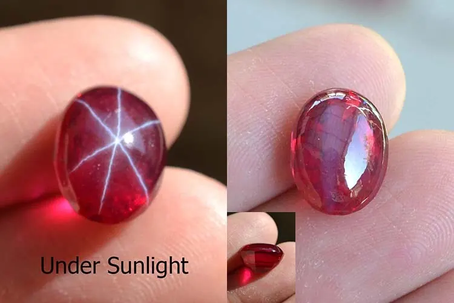

剛玉硬度與包裹體判讀：讀懂寶石的年輪
剛玉的硬度 9 不是口號，是鋁氧鍵的堅固網；而寶石體內的包裹體，是它寫給地質學家的自傳。

核心定義
剛玉（corundum）是紅寶石與藍寶石的母礦物，化學式 Al₂O₃，摩氏硬度 9——僅次於鑽石的 10，是所有寶石中的「老二」。它的硬度來自鋁氧鍵的堅固結構：鋁離子與氧離子緊密堆積，讓它難被劃傷、適合日常佩戴。
包裹體（inclusions）是寶石內部的礦物晶體、針狀物、氣液體等「小夥伴」——它們是寶石結晶時的環境紀錄，像樹木年輪一樣，記錄著溫度、壓力、成分與成長過程。鑑定師讀包裹體，就像讀一本寶石的傳記。
特徵與分類
| 包裹體類型 | 訊息 | 用途 |
|---|---|---|
| 金紅石針 | 冷卻出溶、產地 | 判斷天然/產地/星光 |
| 色帶 | 結晶成分不均 | 產地線索 |
| 晶體（鋯石等） | 共生礦物 | 產地指紋 |
| 氣液體包體 | 流體環境 | 天然證據 |
| 暈環/斷針 | 加熱跡象 | 判斷燒沒燒 |
「乾淨」的寶石千篇一律，「有包裹體」的寶石各有故事——包裹體是天然寶石與合成寶石的重要分野：合成寶石要嘛太乾淨，要嘛留下助熔劑、鉑片、生長紋等「實驗室指紋」。
科學原理
硬度的來源是晶格鍵：剛玉的鋁離子被六個氧離子包圍，形成極穩固的八面體配位結構，外力難以切斷——這讓它硬度達 9。但硬度高≠韌性好：剛玉仍怕猛烈的點撞擊（可能崩裂），保養時照樣要小心。
包裹體的科學判讀：金紅石針是「固溶體出溶」的產物（高溫溶解、降溫析出）；鋯石晶體周圍常帶放射狀暈環（晶格輻射損傷）；氣液體包體記錄結晶流體。每個特徵都是地質參數的記錄器。
鑑定與鑑別方法
- 十倍放大鏡掃描包裹體：種類、排列、分布
- 判斷針狀物狀態：完整＝可能無燒；熔融斷裂＝加熱
- 看色帶與共生晶體：產地線索
- 對照權威實驗室報告
- 實用面：選「美觀的包裹體」而非「零包裹體」——絲絨感、星光都來自包裹體
市場行情與保養建議
市場上，「包裹體美學」正在抬頭：絲絨感紅寶、星光藍寶、內含「花園」的祖母綠，都讓包裹體從「減分項」變成「個性資產」。鑑定報告的「特色內含物」欄位，甚至成為收藏敘事的一部分。
購買建議：先確認包裹體不影響耐久度（如深裂紋），再談美感——「美觀的包裹體」加分，「危險的裂紋」扣分，兩者要分清楚。
常見誤區
硬度抗刮，不抗撞。剛玉在強力撞擊下仍可能崩裂，且怕高溫（焊接）、怕長時間強酸。硬度高是「耐刮」，不是「無敵」。
要看種類與效果：讓顏色更美的絲絨針、造出星光的針晶是加分；深裂紋、大片雲狀是扣分。包裹體是中性事實，美學與耐久度才是判斷標準。
冷知識
無色剛玉（白寶石）折射率高、硬度高，曾長期被當作鑽石仿品——直到折射率與比重測試普及才「洗白」。
都是剛玉，差別只在鉻（紅）與鐵鈦（藍）——地質化學的一點點差異，讓同一種礦物分化成寶石界的兩大巨星。
反直覺觀點
剛玉怕撞、怕焊槍高溫、怕強酸——硬度解決了「刮傷」，卻沒解決「碰撞」。對寶石的呵護，硬度 9 和硬度 7 一樣不能偷懶。
緬甸紅寶的絲絨、星光藍寶的針晶、喀什米爾藍寶的絨光——頂級貨的靈魂全在包裹體裡。追求「絕對乾淨」的人，反而錯過了頂級美學。